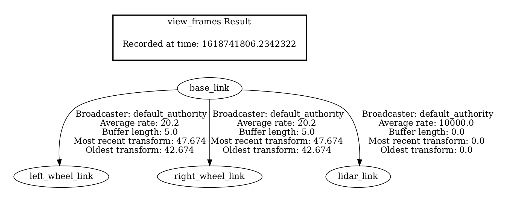

错误记录

可以通过robot_state_publisher来带一个world file
有一个很好的项目，ROBOTIS-GIT/turtlebot3_simulations
Invalid frame ID “front_caster_link” passed to canTransform argument source_frame
利用可视化model的时候, 发现没有从base_link到前后万向轮的转换，同时通过tf2的工具
1 | os2 run tf2_tools view_frames |
生成的PDF文件为

的确是缺少了base_link和前后万向轮的一个连接。
“robot_description” 参数定义了urdf文件的路径，它被 robot_state_publisher节点使用。该节点解析urdf文件后将各个frame的状态发布给tf. 因此在rviz里面就看到各个frame(link)之间的tf转换显示OK.否则会显示warning.
需要添加joint_state_piblisher
1 | git clone |
Comments